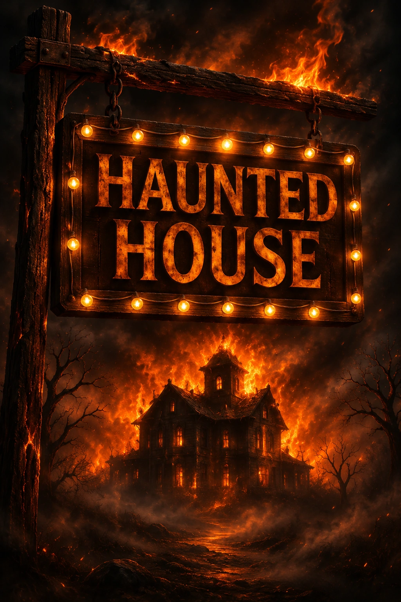

Ficha de catálogo
Haunt
Haunt Escape
Ficha de Haunt de Haunt Escape en La Roca del Vallès, con datos de ubicación y enlaces de consulta.

Ficha de Haunt de Haunt Escape en La Roca del Vallès, con datos de ubicación y enlaces de consulta.
🔥 ¡Un pasaje del terror consumido por las llamas, una reapertura imposible y unas misteriosas entradas que jamás deberíais haber aceptado!
Hace años, un terrible incendio arrasó un antiguo pasaje del terror, reduciendo a cenizas todo lo que encontraba a su paso. Las llamas devoraron sus instalaciones y acabaron con la vida de todos los que se encontraban en su interior.
No hubo supervivientes. No quedó nada. O al menos, eso es lo que todos creían...
Durante años, aquel lugar permaneció envuelto en el silencio, convertido en un oscuro recuerdo de una tragedia que nadie quería volver a mencionar. Sus puertas nunca volvieron a abrirse y el espectáculo quedó enterrado entre las cenizas.
Hasta ahora.
🎟️ ¡El pasaje del terror anuncia su gran reapertura!
Sin previo aviso, vosotros y vuestro grupo de amigos recibís unas extrañas entradas para asistir a una función muy especial.
Nadie sabe quién las ha enviado. Nadie comprende cómo un lugar destruido hace tantos años puede volver a abrir sus puertas. Y lo más inquietante de todo... nadie parece saber quién está detrás de esta nueva función.
Pero la curiosidad puede más que el sentido común.
Decidís aceptar la invitación, convencidos de que os espera una noche de risas, sustos y diversión entre amigos.
🎪 ¡Bienvenidos al espectáculo!
Las luces vuelven a encenderse. Los decorados están preparados. Una atmósfera inquietante invade cada rincón del recinto y todo parece listo para que comience la función.
Sin embargo, algo no encaja...
Los actores se comportan de una manera demasiado extraña. Sus movimientos resultan perturbadores y sus miradas parecen esconder algo más que una simple interpretación.
Los gritos que se escuchan detrás de las paredes no parecen formar parte de ningún guion.
Y entonces sucede lo inevitable...
🚨 ¡Las salidas se cierran y descubrís que ya no sois simples espectadores!
Lo que debía ser una divertida visita a un pasaje del terror se transforma en una experiencia donde la realidad y la ficción comienzan a confundirse.
Ahora sois parte del espectáculo. Parte de una historia que quizá nunca llegó a terminar.
Tendréis que recorrer sus inquietantes instalaciones, descubrir los secretos que esconden sus rincones y utilizar vuestro ingenio para resolver los enigmas que os permitirán avanzar.
Pero el verdadero desafío no será únicamente encontrar la salida...
Será mantener la calma cuando todo a vuestro alrededor os haga creer que no estáis solos.
Cada ruido puede ser una advertencia. Cada sombra puede esconder una presencia. Y cada puerta que crucéis podría acercaros a la libertad... o adentraros todavía más en la pesadilla.
🩸 ¡En HAUNT, vosotros decidís hasta dónde estáis dispuestos a llegar!
Una de las grandes particularidades de esta experiencia es que ofrece tres modalidades de juego, permitiendo disfrutar de la misma historia con niveles de intensidad completamente diferentes.
Para quienes desean sumergirse en una historia oscura sin enfrentarse a sustos directos.
En esta modalidad, el terror se construye mediante la ambientación, la narrativa y la inquietante sensación de que algo podría estar observándoos.
No hay actores persiguiéndoos, apariciones ni sobresaltos. Solo vosotros, los secretos del pasaje y los enigmas que deberéis resolver.
Una opción ideal para familias con niños, jugadores principiantes o grupos que prefieren disfrutar del misterio y la tensión ambiental sin pasar miedo de verdad.
¡Aquí las sombras ya no permanecen inmóviles!
Los personajes aparecen cuando menos lo esperáis, los susurros os acompañan y extrañas figuras se mueven en los límites de vuestra visión.
Los sobresaltos, la oscuridad y la sensación constante de estar siendo observados transforman la investigación en una experiencia de auténtica adrenalina.
Existe contacto físico puntual y no agresivo, acompañado de una atmósfera de amenaza permanente.
Una modalidad diseñada para quienes desean vivir el terror en primera persona, experimentar la tensión de una película de miedo y disfrutar de una aventura intensa sin llegar al nivel más extremo.
🔥 ¡No hay escapatoria. No hay tregua. No hay espacio personal!
Esta es la modalidad original, más intensa y exigente de la experiencia.
Aquí el terror deja de limitarse a lo que veis y escucháis. Los personajes interactúan directamente con vosotros mediante contacto físico frecuente e intimidante, pudiendo agarraros, separaros del grupo y perseguiros por las instalaciones.
Las apariciones son constantes, la tensión no desaparece y el caos controlado forma parte de una experiencia diseñada para que os sintáis dentro de vuestra propia película de terror.
No basta con observar el espectáculo. Ahora sois sus protagonistas.
Una modalidad reservada exclusivamente a mayores de 18 años, pensada para los amantes del terror más intenso, el contacto físico y las experiencias que llevan la adrenalina al límite.
🎭 Tres maneras de vivir una misma pesadilla. Tres niveles de intensidad. Una historia que nunca debería haber vuelto a comenzar.
Tanto si preferís investigar los secretos del pasaje sin sobresaltos como si buscáis una experiencia cargada de tensión o queréis enfrentaros a su modalidad más extrema, HAUNT os invita a descubrir qué ocurrió realmente tras aquel terrible incendio.
🔥 Las cenizas todavía esconden secretos, las luces vuelven a iluminar el escenario y alguien os está esperando al otro lado de la puerta...
🎟️ ¿Quién os ha enviado las entradas? ¿Qué sucedió realmente aquella noche? ¿Y por qué el espectáculo parece haber estado esperando precisamente vuestra llegada?
☠️ Solo hay una manera de descubrirlo: entrar.
Pero recordad las reglas de HAUNT...
🎭 ¡Sobrevivid al espectáculo... o convertíos en parte de él!